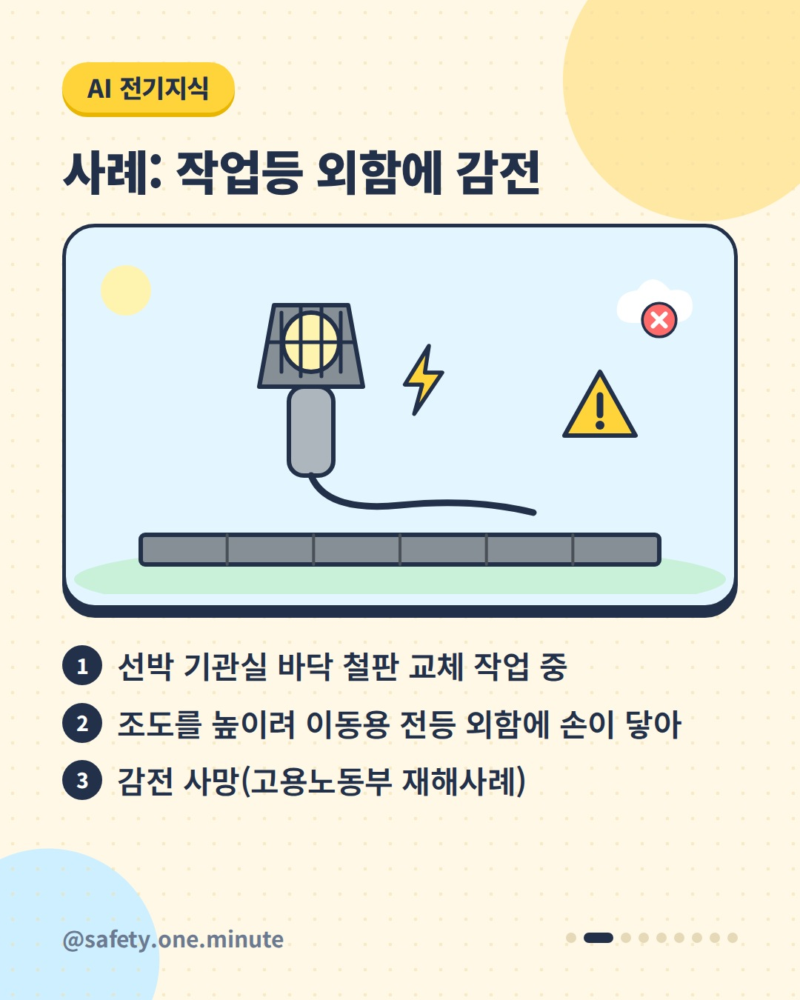
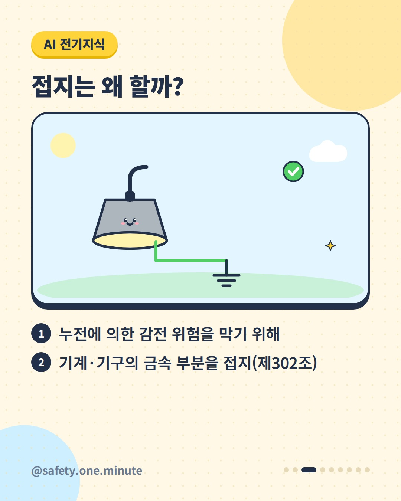
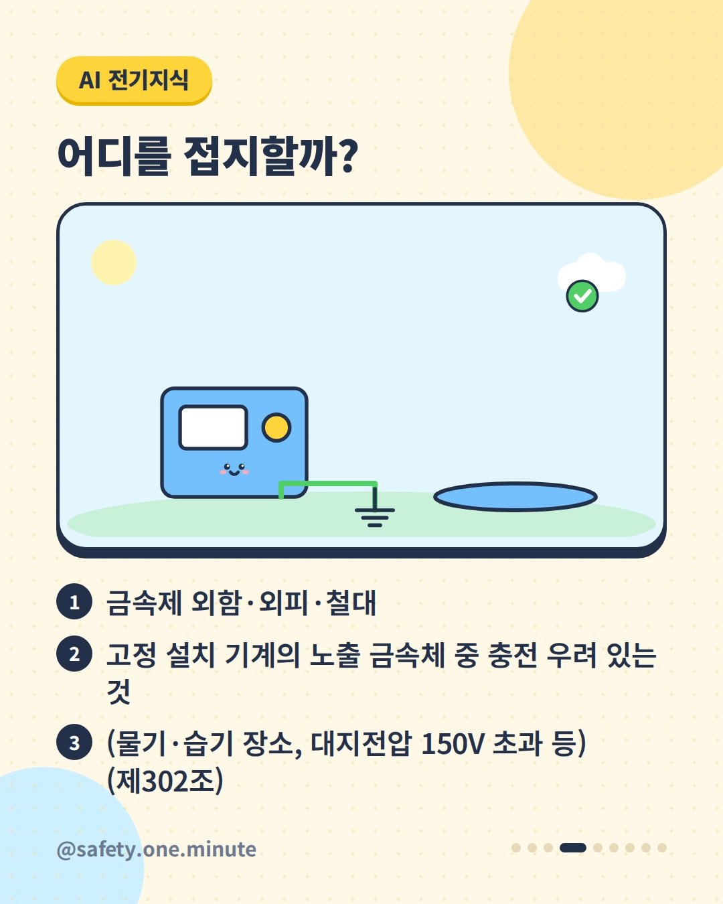
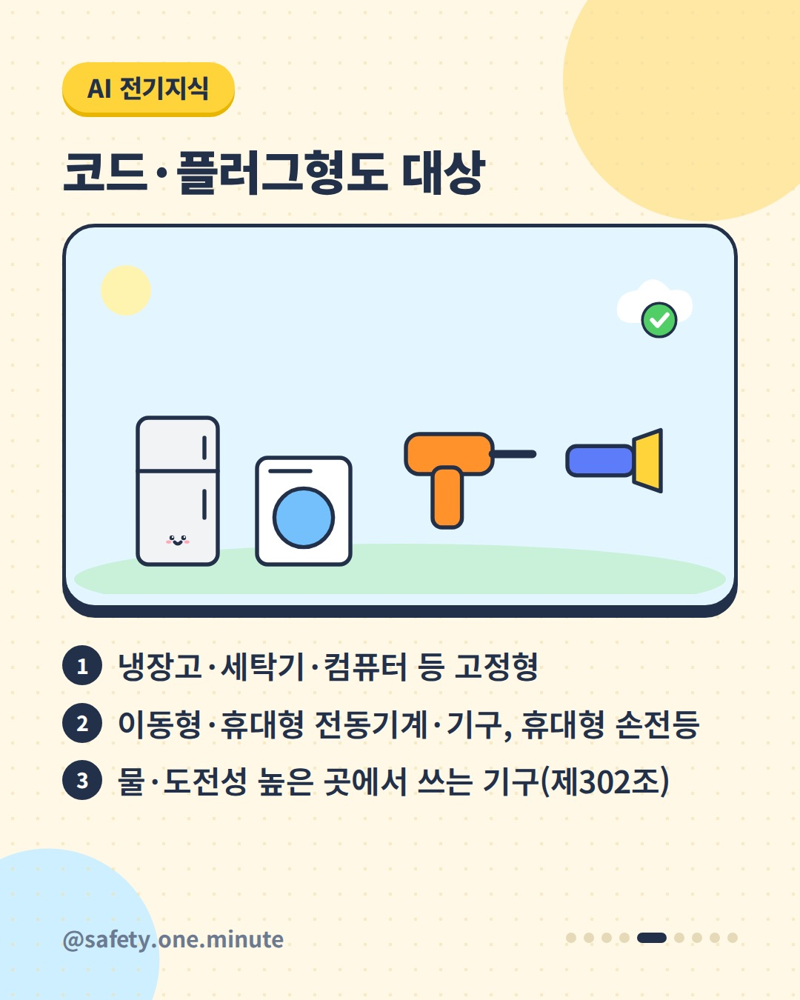
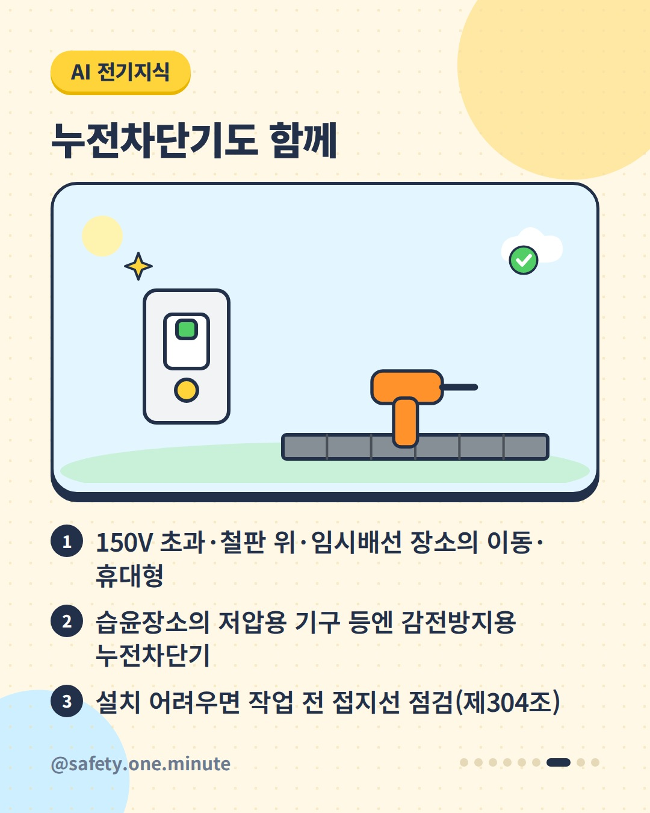
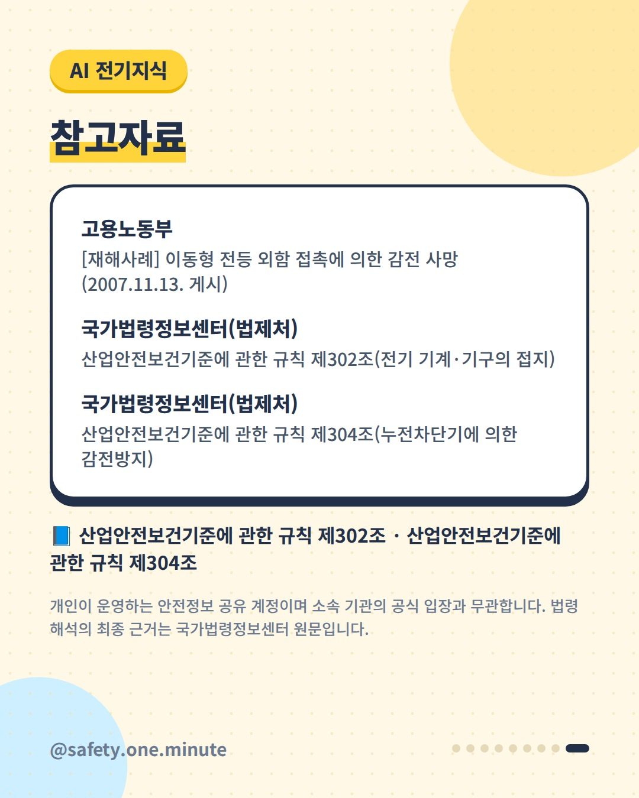

접지, 왜 해야 할까? — 9장 (4:5)






캡션
전기기계의 금속 외함, 맨손으로 만져도 괜찮을까요? 고용노동부가 공개한 재해사례입니다. 선박 기관실에서 바닥 철판을 교체하던 작업자가, 조도를 높이려고 이동용 전등의 외함에 손을 대는 순간 감전돼 숨졌습니다(원 사례에 원인·대책 항목은 따로 없습니다). 산업안전보건기준에 관한 규칙은 누전에 의한 감전을 막기 위해 이렇게 정하고 있습니다. ① 금속제 외함·외피·철대, 고정 설치 기계의 노출 금속체 중 충전 우려가 있는 것(물기·습기 장소, 대지전압 150V 초과 등)은 접지(제302조) ② 코드·플러그로 쓰는 냉장고·세탁기·컴퓨터 등 고정형, 이동형·휴대형 전동기계·기구, 물·도전성 높은 곳에서 쓰는 기구, 휴대형 손전등도 접지 대상(제302조) ③ 이중절연 등 그 이상 보호되는 구조, 절연대 위 등 감전 위험이 없는 장소, 일정 조건의 비접지방식 전로는 예외(제302조) ④ 대지전압 150V 초과·철판·철골 위·임시배선 장소의 이동형·휴대형 기구, 습윤장소의 저압용 기구에는 감전방지용 누전차단기, 설치가 어려우면 작업 전 접지선 점검(제304조) ⑤ 접지설비는 늘 점검하고 이상이 있으면 즉시 보수·재설치(제302조) ※ 세부 요건은 법령 원문(2025.9.1. 시행본 기준)을 확인하세요. 출처: - 고용노동부 – 이동형 전등 외함 접촉 감전 재해사례(2007 게시) - 국가법령정보센터(법제처) – 산업안전보건기준에 관한 규칙 제302조·제304조 개인이 운영하는 안전정보 공유 계정이며 소속 기관의 공식 입장과 무관합니다. 법령 해석의 최종 근거는 국가법령정보센터 원문입니다. #접지 #감전예방 #누전차단기 #전기상식 #전기안전 #안전보건규칙